March Madness Basketball Game
Build upon a few techniques we learned in past CoderDojo sessions!
-
Shoot basketball (clones!) with keyboard control and broadcast messages
-
Animate a sprite with costumes to show a velocity meter
-
Use variables for basketball motion (velocity and gravity)
-
Keep track of baskets completed with a Score counter
-
Determine end of game with a Ball counter
Sign in at Scratch
Go To: http://scratch.mit.edu/

CoderDojo Indigo Studio
Go To: http://scratch.mit.edu/studios/585122/ and click march_madness_starter
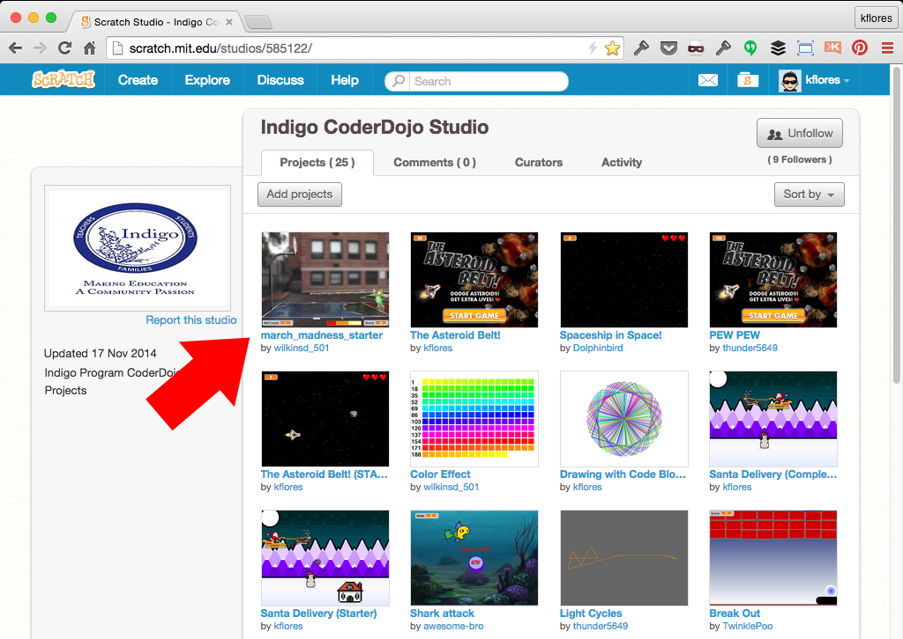Click the "See inside" button
Notice the sections: Title, Instructions and Notes and Credits
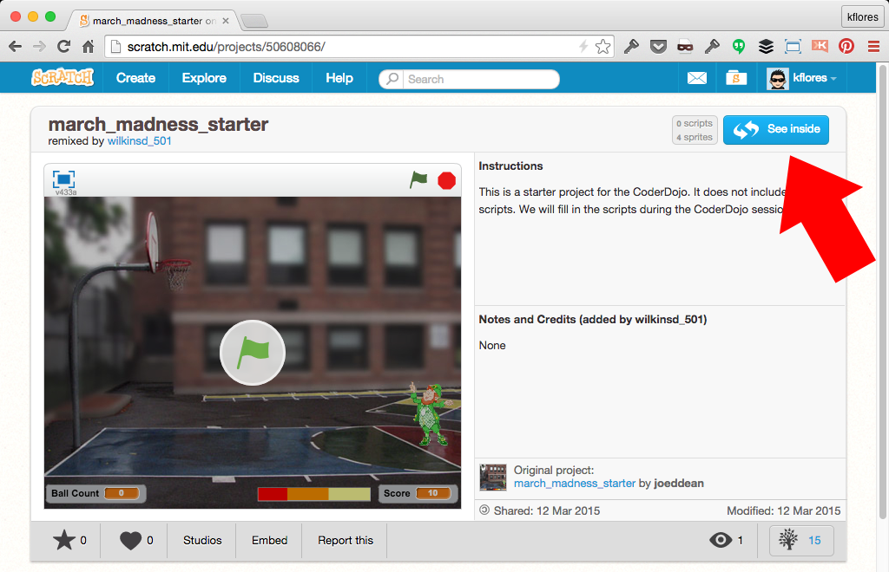Click the "Remix" button
This will make a copy of the project under your name
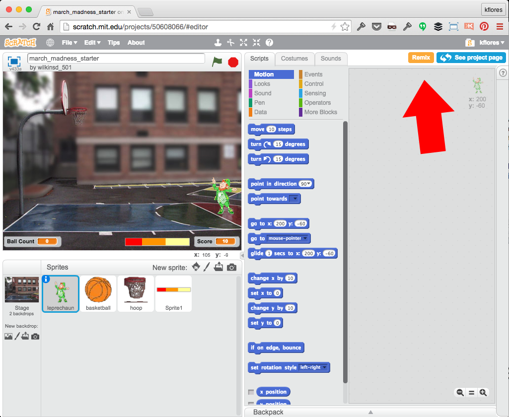Rename the Project
It's a good practice to name your project something unique
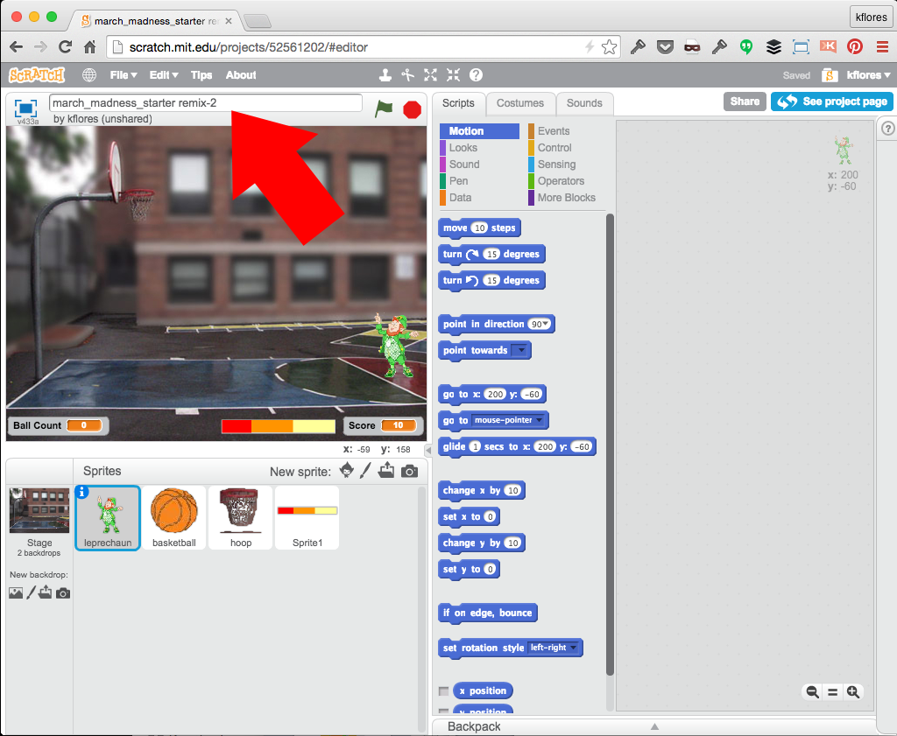Select the "Stage" to set it up
Set a Sound script + scripts to show which backdrop to display upon start and end of game
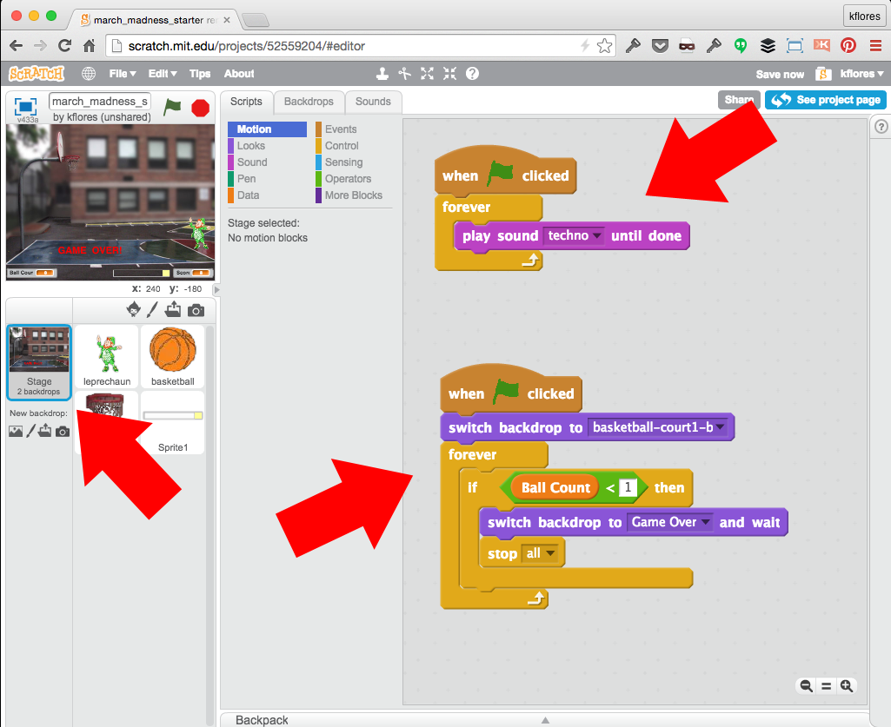Select the "leprechaun" sprite
We want the Leprechaun to shoot from the throw line
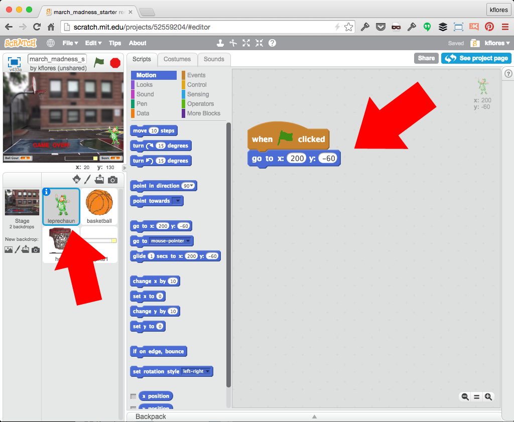Select the "hoop" sprite
We want the hoop on the backboard and to always remain in front
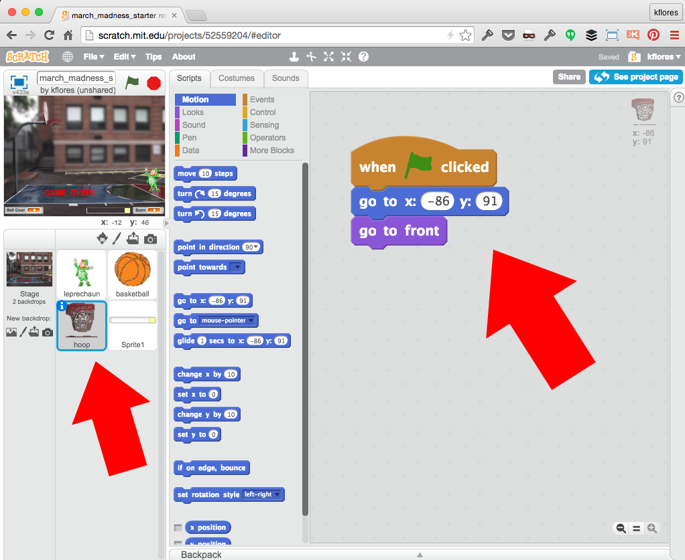Select the "basketball" sprite
Set up all variables and our first clone upon start + what to do as a clone
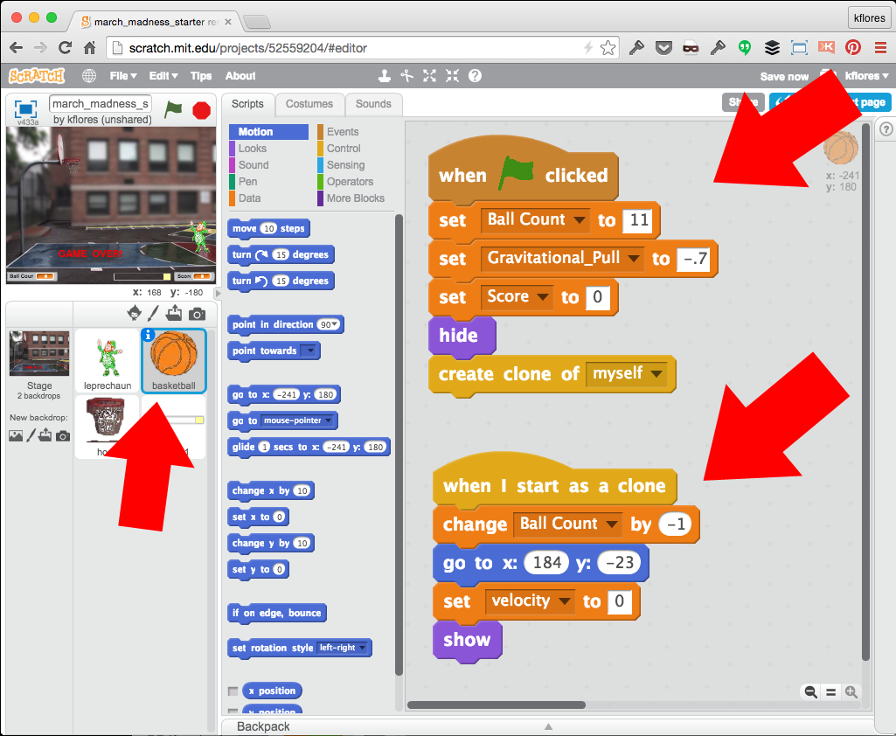Ths is the main basketball script!
When the "Shot" message is received: start the motion, check for the backboard or hoop "collision" and score!
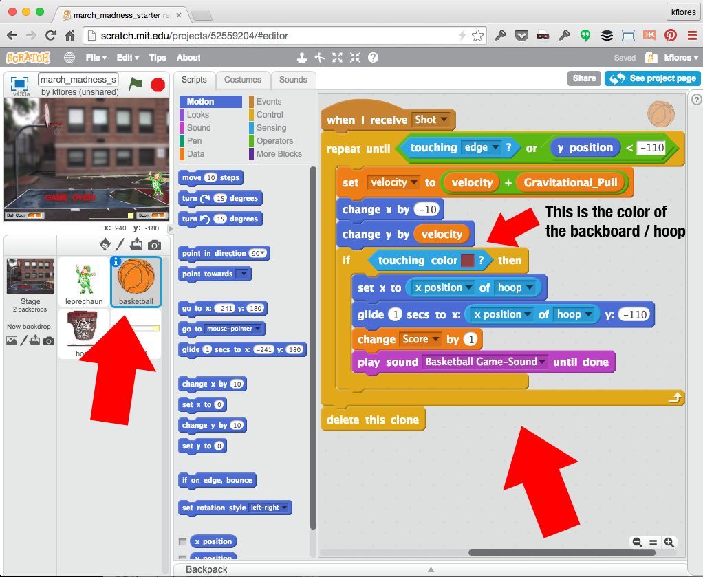Select the "Sprite1" sprite (Velocity Meter) - Costumes
Check out the costumes: the different costumes represent the velocity bar that will animate. We will use the costume # to determine how hard the ball is thrown.
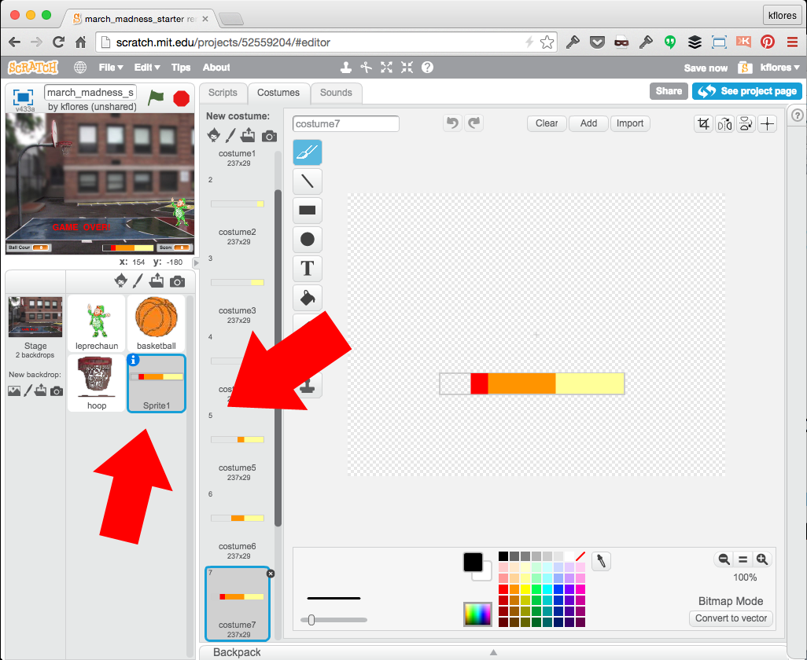Select the "Sprite1" sprite (Velocity Meter) - Scripts
Upon receiving the "New Shot" message, the velocity meter will animate costumes until the "space" key is pressed to throw a ball, using the velocity.
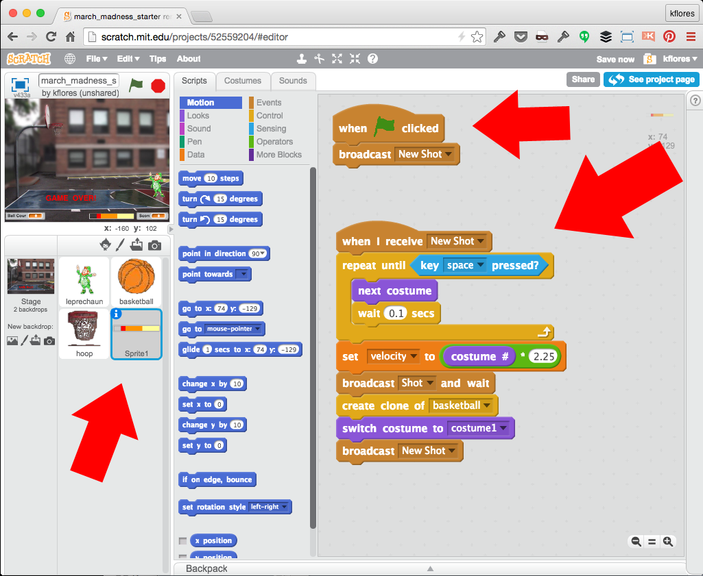Congratulations!
You built a cool Basketball game! Now, here are a few Challenges:
-
Add additional costumes for the character when he throws the ball.
-
Allow the character to move left / right and throw the ball at different angles.
/